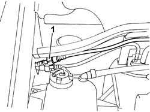
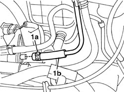
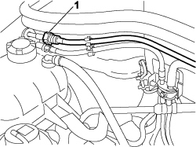
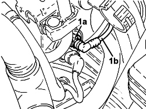

1080E62 pipe from fuel vapour separator to solenoid - r r
- Path
- Procedures > 10 ENGINE > 1080 EMISSION CONTROL SYSTEM > 1080E EVAPORATION CONTROL SYSTEM > 1080E62 pipe from fuel vapour separator to solenoid - r r
- Kind
- repair procedure (removal / refitting; the operation number is the code)
- Applies to
- engines: 1.2 8v, 1.4 8v; all production periods
- Interactive page
- https://sloeber94.github.io/elrnDB-fDbl/en/#/2584282
Applies to: engines: 1.2 8v; all production periods
 Removing
Removing
 Refitting
Refitting1. Disconnect the rapid connector for the evaporation control pipe.
Release the pipe from the retaining collars.

Applies to: engines: 1.2 8v; all production periods
1. Remove the retaining band (1a) and disconnect the pipe (1b) from the solenoid.

Applies to: engines: 1.2 8v; all production periods
Refitting
RemovingConnect the pipe to the solenoid and secure it using a retaining band.
Connect the quick connector and secure the entire pipe to the retaining collar.
Applies to: engines: 1.4 8v; all production periods
Removing
Refitting- Turn the ignition key to the OFF position.
- Disconnect the negative battery terminal.
Description | Connector | |
|---|---|---|
- | BATTERY |
Op. 1048A10 AIR FILTER ASSEMBLY - R.R.
1. Disconnect the rapid connector for the evaporation control pipe.
- Release the pipe from the retaining collars.

Applies to: engines: 1.4 8v; all production periods
1. Disconnect the rapid connector (1a) and remove the fuel vapour pipe (1b).

Applies to: engines: 1.4 8v; all production periods
Refitting
Removing- Place the fuel vapour recovery pipe in position and connect the rapid connector.
- Connect the intermediate rapid connector for the fuel vapour pipe.
Op. 1048A10 AIR FILTER ASSEMBLY - R.R.
- Connect the negative battery terminal.
Description | Connector | |
|---|---|---|
- | BATTERY |